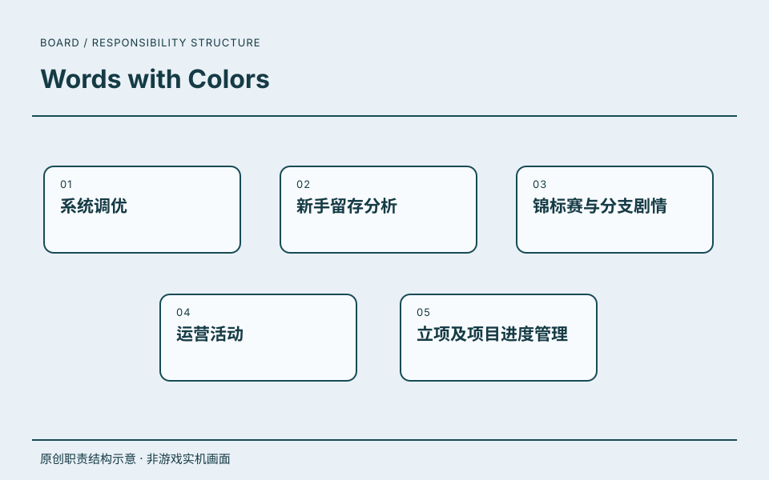

06 / 系统与推进看板 · PROJECT 02
Words with Colors.
北京贝塔科技任职期间参与的项目之一。
职责沿用该段公司经历的记录；共同职责不逐项归为单个项目的独立成果。

高级系统策划
从系统调优、新手留存分析，到活动、剧情与项目进度管理。
职责与关注点
- 01系统调优
- 02新手留存分析
- 03锦标赛与分支剧情
- 04运营活动
- 05立项及项目进度管理
这一章的项目
项目与履历的连接
《Words with Colors》列于这段任职经历中。
- 任职公司
- 北京贝塔科技股份有限公司
- 角色
- 高级系统策划
- 时间
- 2020.03—2021.02
任职、角色与职责依据本人履历及确认。图示是本站原创的职责结构表达。